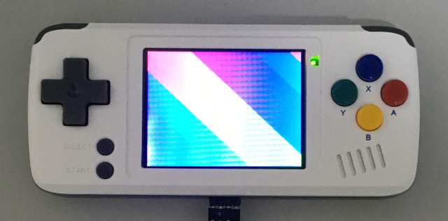
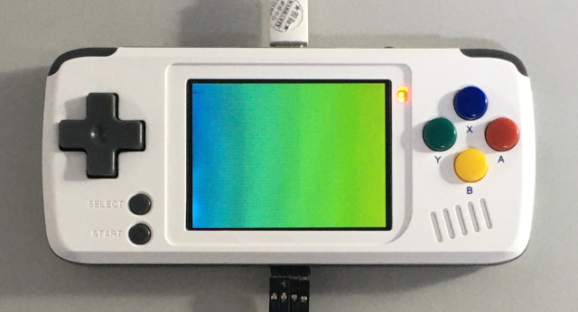
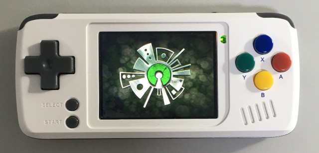
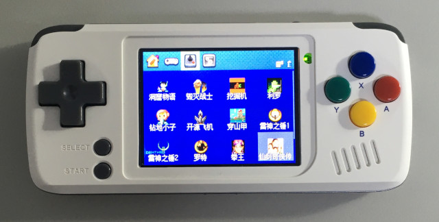
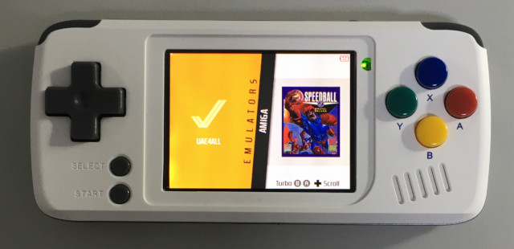
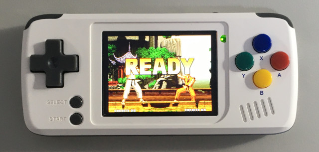

參考資訊：
https://github.com/steward-fu/website/releases/download/pocketgo/pocketgo_od_jckl_no_roms.img.7z
https://github.com/steward-fu/website/releases/download/pocketgo/pocketgo_od_jutleys_no_roms.img.7z
修正閃屏前





